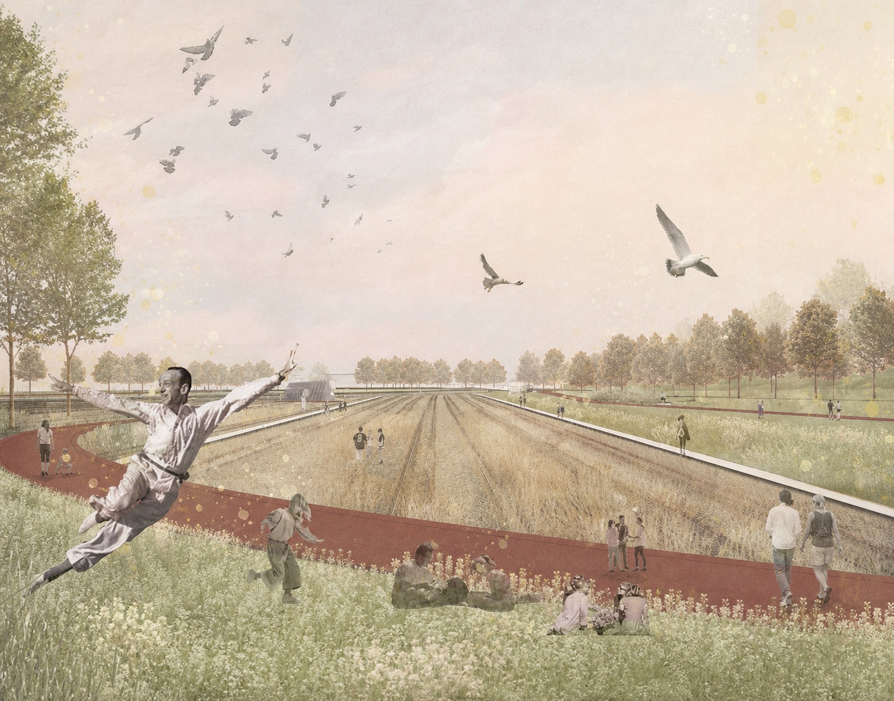
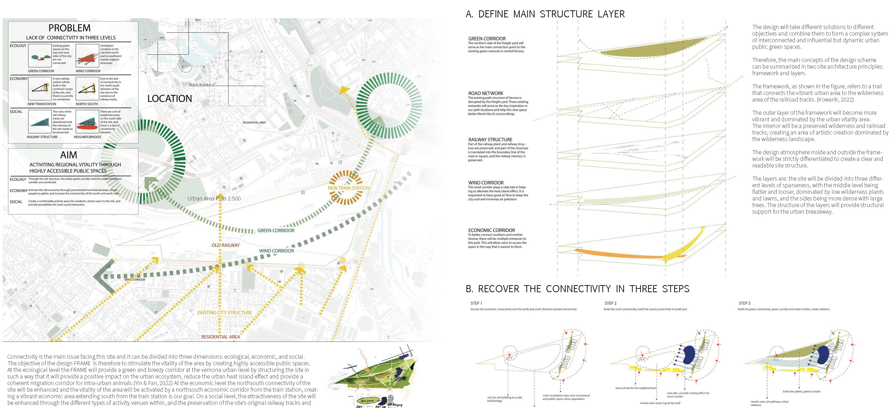
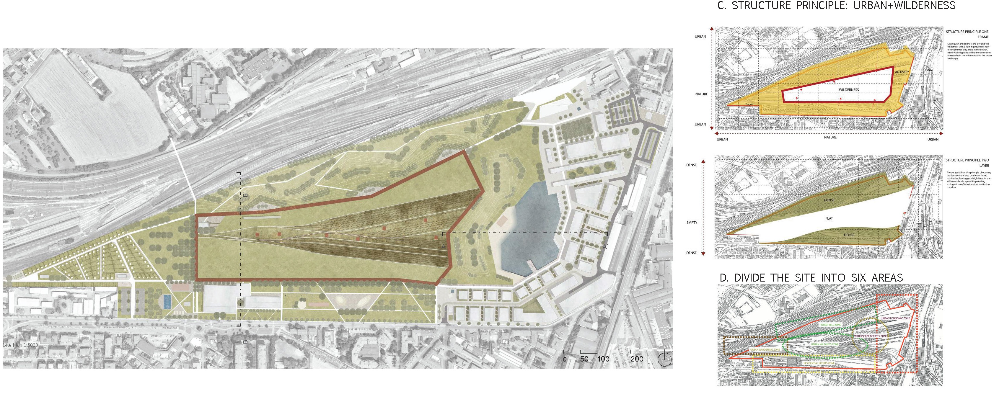
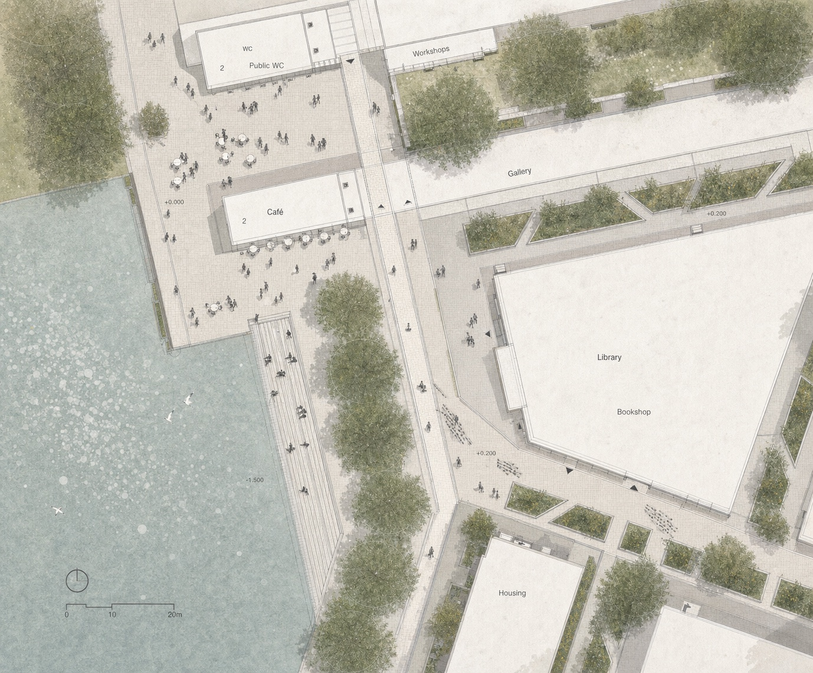
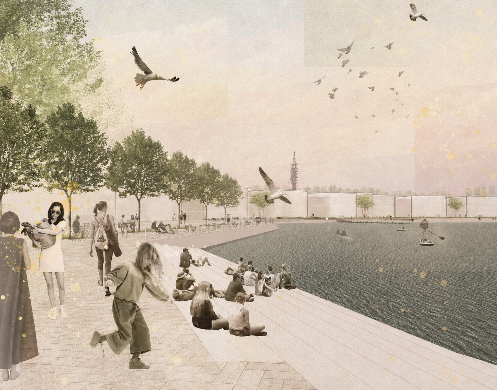
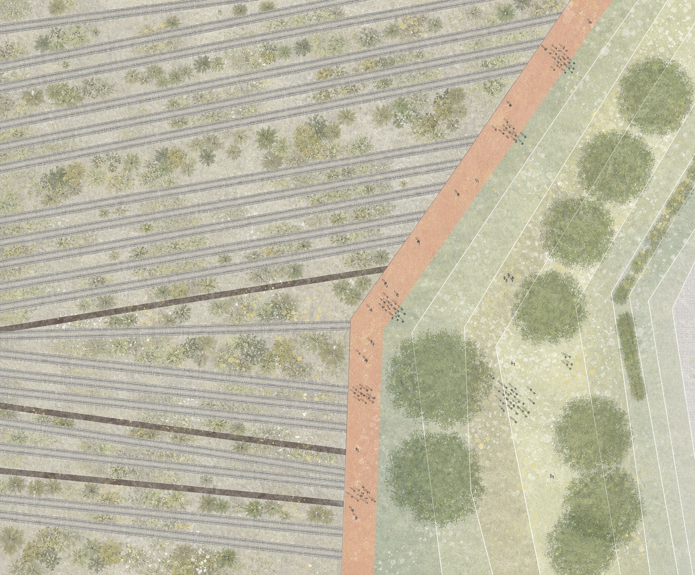
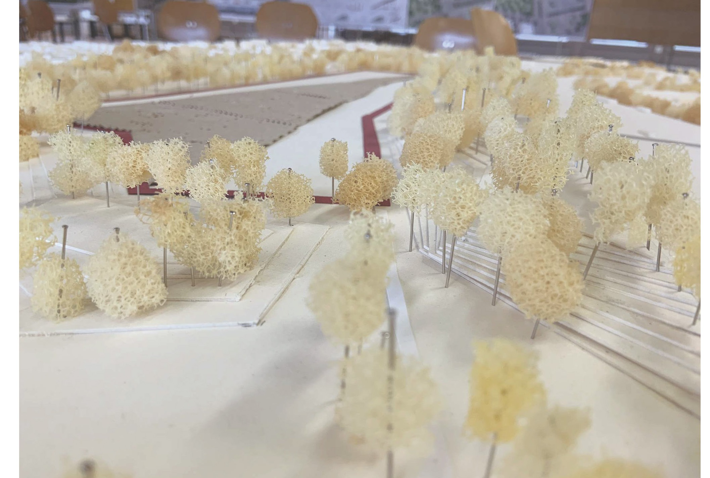

Spatial Frame
A legible landscape structure that organizes movement, edges, and new public programs.
Post-industrial landscape / Urban wilderness

FRAME is a post-industrial landscape design for the former Porta Nuova rail freight yard in Verona, transforming an almost 50-hectare railway site into a connected public landscape.
The proposal preserves the site's spontaneous wilderness and railway memory while introducing a clear spatial frame for public life, ecological continuity, cultural reuse, and new east-west and north-south connections.
A legible landscape structure that organizes movement, edges, and new public programs.
Self-developing vegetation is kept as the site's identity and ecological foundation.
Existing tracks, relics, and linear traces are reused as spatial and cultural anchors.
The former barrier becomes a shared open-space link between districts and everyday users.





